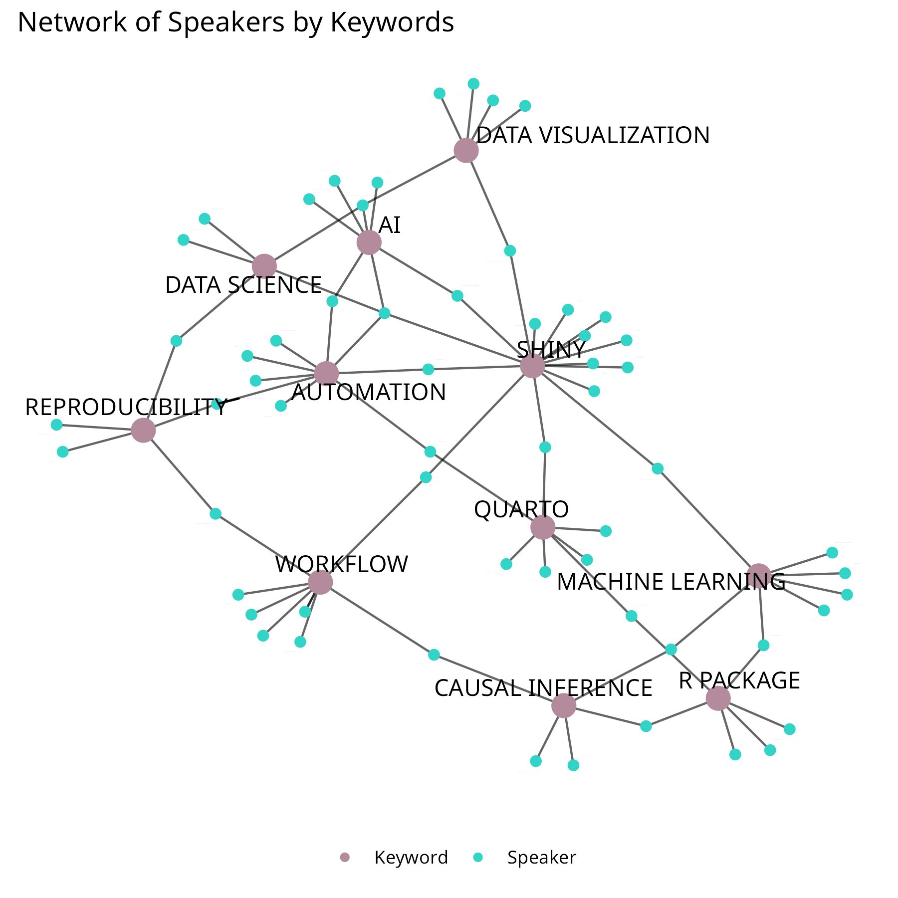

Tidy Tuesday Week 14
Tidy Tuesday on Thursday at CSUCI! Analyzing UseR!
CODE
Below is the code use to construct the plot above. You can find the entire code here.
## --- Loading Required Libraries ---
library(tidyverse) # For data wrangling and visualization (includes ggplot2, dplyr, tidyr, etc.)
library(csucistats) # Custom or specialized functions from CSUCI (likely used elsewhere or for consistency)
library(igraph) # For creating and manipulating graph/network objects
library(ggraph) # For visualizing graphs using ggplot2
library(tidygraph) # For tidy manipulation of graph/network data
## --- Loading and Cleaning the Data ---
# Load CSV data from the TidyTuesday GitHub repository
user2025 <- readr::read_csv('https://raw.githubusercontent.com/rfordatascience/tidytuesday/main/data/2025/2025-04-29/user2025.csv')
# Expand multiple comma-separated keywords into multiple rows per speaker
# Then clean whitespace and standardize to uppercase
pdf <- user2025 |>
separate_longer_delim(keywords, delim = ",") |> # Split comma-separated 'keywords' into separate rows
mutate(
keywords = str_trim(keywords, side = "both"), # Trim leading/trailing whitespace
keywords = str_to_upper(keywords) # Convert keywords to uppercase for consistency
)
## --- Filtering Keywords ---
# Create a frequency table of keywords
pdf_tbl <- table(pdf$keywords)
# Keep only keywords that appear more than 4 times
tbl_names <- pdf_tbl[pdf_tbl > 4] |> names()
# Filter data to only keep rows with keywords that passed the frequency threshold
# Also prepare the data frame for graph creation
df <- pdf |>
filter(keywords %in% tbl_names) |> # Keep only frequent keywords
select(speakers, keywords) |> # Select columns relevant for the graph
rename(from = speakers, to = keywords) # Rename for compatibility with igraph format
## --- Creating the Graph Object ---
# Create an undirected graph from the edge list (from = speaker, to = keyword)
g <- graph_from_data_frame(df, directed = FALSE)
# Add a vertex attribute: TRUE if the node is a speaker, FALSE if it is a keyword
V(g)$type <- V(g)$name %in% unique(df$from) # Used to distinguish between people and topics
## --- Converting to tidygraph Format for Visualization ---
tg <- as_tbl_graph(g) # Convert igraph object to tidygraph format
# Define node text size and point size based on type (speaker or keyword)
label_sizes <- ifelse(V(g)$type, 0, 4) # Only label keyword nodes
node_sizes <- ifelse(V(g)$type, 2, 5) # Make keyword nodes larger
## --- Visualizing the Network ---
# Use ggraph with a force-directed layout to visualize the graph
ggraph(tg, layout = "fr") + # 'fr' = Fruchterman-Reingold layout for good node spacing
geom_edge_link(alpha = 0.6) + # Draw semi-transparent edges
geom_node_point(aes(color = type), size = node_sizes) + # Draw nodes with size and color by type
geom_node_text(aes(label = name), size = label_sizes, repel = TRUE) + # Add keyword labels (repelled to avoid overlap)
theme_bw() + # Apply a clean black-and-white theme
theme(
axis.title = element_blank(), # Remove axis titles
axis.text = element_blank(), # Remove axis text
axis.ticks = element_blank(), # Remove axis ticks
panel.grid = element_blank(), # Remove grid lines
panel.border = element_blank(), # Remove panel border
legend.title = element_blank(), # Remove legend title
legend.position = "bottom" # Move legend to bottom
) +
scale_color_manual(
values = c("#B48B9C", "#30d5c8"), # Manually set colors for nodes
labels = c("Keyword", "Speaker") # Legend labels: FALSE = Keyword, TRUE = Speaker
) +
ggtitle("Network of Speakers by Keywords") # Add plot title
## --- Saving the Plot ---
ggsave(
filename = file.path("posts", "wk_4_29_25", paste0("final", ".png")), # Save location and file name
height = 6, # Height in inches
width = 6, # Width in inches
units = "in", # Units for size
dpi = 300 # Resolution for high-quality image
)